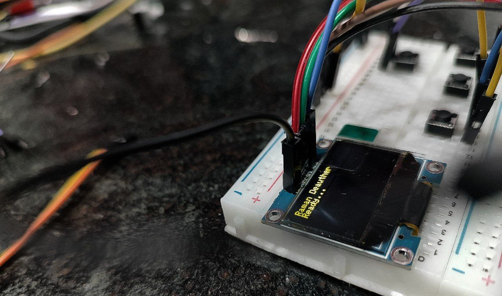

ESP32 802.11 Deauth & Network Auditing Device
A standalone, pocket-sized hardware security appliance built on the ESP32 dual-core SoC. Enables deep IEEE 802.11 management frame inspection, targeted packet deauthentication, beacon spamming, and real-time OLED telemetry without external PC dependencies.

1. The Problem Space & IEEE 802.11 Vulnerability
The IEEE 802.11 Wi-Fi standard historically transmits management frames (such as Beacon, Probe Request, and Deauthentication/Disassociation frames) in cleartext without cryptographic message integrity verification unless 802.11w (Management Frame Protection - MFP) is strictly enforced. Malicious or misconfigured networks can be diagnosed and audited by injecting unencrypted deauth frames to test network resiliency and client reconnection behavior.
Standard security assessments require cumbersome laptops with specific external wireless NICs running Kali Linux and packet injection drivers (such as airmon-ng). The goal of this project was to condense the entire wireless packet manipulation pipeline into a micro-power, battery-operated embedded appliance running natively on an ESP32 microcontroller.
2. Dual-Core FreeRTOS Task Distribution
Injecting 802.11 raw frames at high rates while simultaneously rendering UI elements to an I2C OLED screen and hosting an asynchronous HTTP captive portal requires deterministic task separation. An ESP32 dual-core Xtensa architecture was leveraged:
Core 0: RF & Promiscuous RX/TX Engine
Dedicated strictly to the Wi-Fi baseband: cycling 2.4 GHz channels (1-14), capturing probe requests in promiscuous mode, maintaining client-AP association tables, and dispatching crafted raw 802.11 frame buffers using esp_wifi_80211_tx.
Core 1: OLED Pipeline & Async Web GUI
Runs the SSD1306 rendering engine at 30 FPS over fast I2C (400 kHz), scans hardware button debouncing with interrupts, and serves a zero-dependency HTML5/CSS dashboard using ESPAsyncWebServer when SoftAP mode is engaged.
3. Low-Level Raw Frame Crafting
The firmware constructs IEEE 802.11 deauthentication packets directly into contiguous memory buffers before handing off to the MAC hardware layer:
// IEEE 802.11 Deauthentication Frame Structure
uint8_t deauthPacket[26] = {
0xC0, 0x00, // Type: Management, Subtype: Deauthentication (0x0C)
0x00, 0x00, // Duration: 0 µs
0xFF, 0xFF, 0xFF, 0xFF, 0xFF, 0xFF, // Destination MAC (Client or Broadcast)
0xAA, 0xBB, 0xCC, 0xDD, 0xEE, 0xFF, // Source MAC (Access Point BSSID)
0xAA, 0xBB, 0xCC, 0xDD, 0xEE, 0xFF, // BSSID
0x00, 0x00, // Sequence number (dynamic)
0x07, 0x00 // Reason Code: Class 3 frame received from nonassociated STA
};
// Dispatch via native ESP-IDF raw transmission API
esp_wifi_80211_tx(WIFI_IF_STA, deauthPacket, sizeof(deauthPacket), false);4. Key Hardware & Firmware Capabilities
Multi-Target Channel Hopping
Automated asynchronous channel scanning across all 2.4 GHz channels with RSSI signal strength tracking and SSID beacon identification.
Beacon Cloning & Rogue AP Simulation
Simulates dozens of virtual SSIDs simultaneously to evaluate client-side wireless probing behaviors and probe response vulnerabilities.
Zero-Lag OLED UI Engine
Custom double-buffered graphics engine drawing menus, network lists, and real-time transmission graphs on a 128x64 monochrome OLED without blocking the RF core.
Encrypted SoftAP Remote Terminal
When operating in covert mode, the device provides an on-demand Wi-Fi hotspot with a responsive mobile interface for wireless network control from any smartphone.